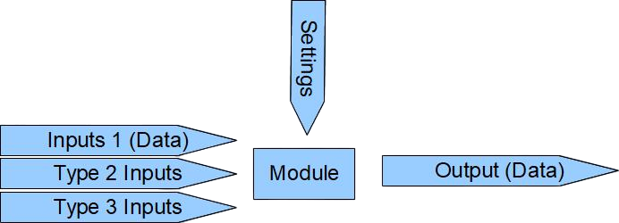

The Universal Format for Algorithms (UFA) is an initiative to provide a standard for a universal format and interface for algorithms
Problem
Nowadays, each algorithm, in the form of source code, library or utility, has its own format and interface. To use it, you have to write specific code linking this algorithm with other parts of the application. This requires time both to study each algorithm and to write code for each program to which the algorithm must be added. Algorithms can be written in different languages, which can add complexity if it needs to be added to a program written in a different language. Algorithms are deeply embedded in the application, which often makes it impossible to update or replace the algorithm separately from the application. Ultimately, all this leads to increased development time.
Also, if we look at the history of abstraction in programming, we see a clear progression:
Decision
Format and interface for algorithms, here called parts. Unification allows you to interact with them in a uniform way, regardless of complexity, type or language. All parts are supplied in a single format (zip archive containing an xml description file and the files of the algorithm itself) and have a single, simple and universal interface, which can be simply described as follows: inputs of 3 types, settings and one output
The outputs of other parts are connected to the inputs, and thus it can: receive data from them, call them, or even change them. Settings determine the behavior of the part. The output is the data that the part generates during operation.
Each part has documentation and examples of use, all settings also have a description. All this allows you to dramatically reduce the time it takes to study the parts.
Application development occurs by connecting parts to each other directly, without writing code (no-code style). This approach to development, on the one hand, allows you to write any code and pack it into reusable parts and, on the other hand, allows you to very quickly build applications from available elements
More information can be found in the documentation section (Development of parts): Documents